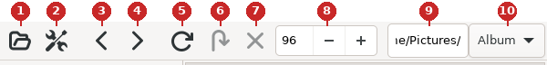
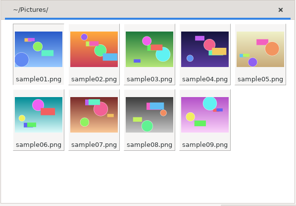
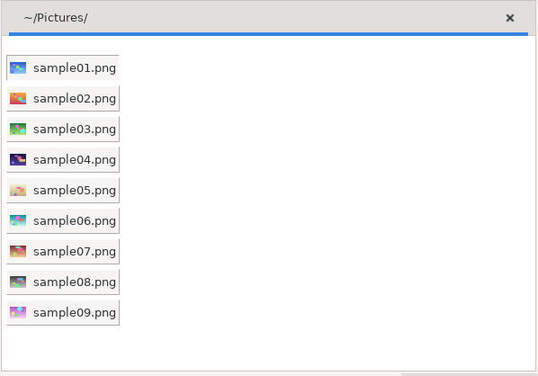
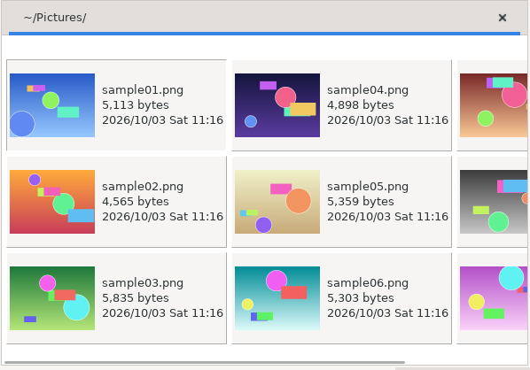
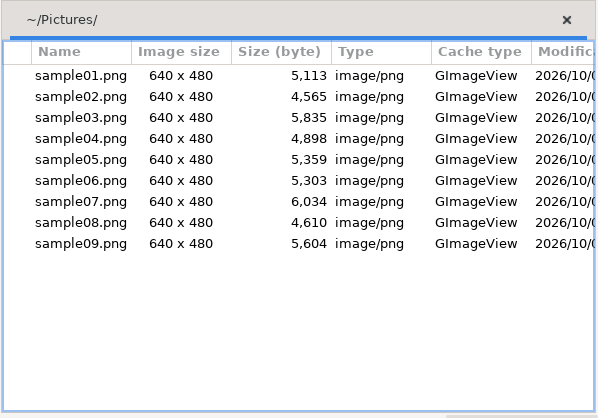
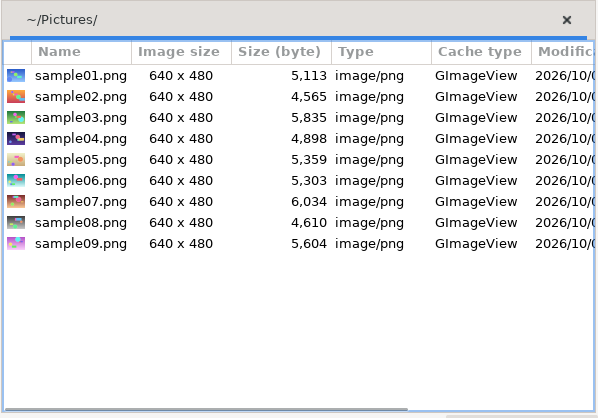
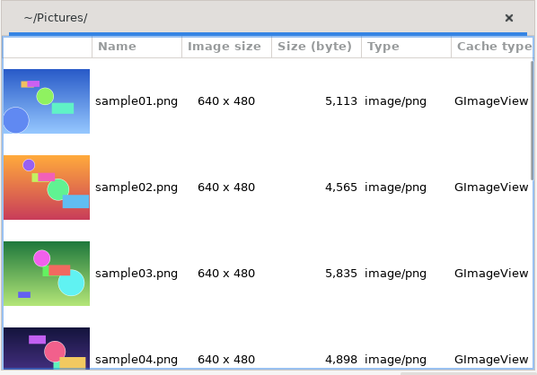
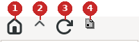
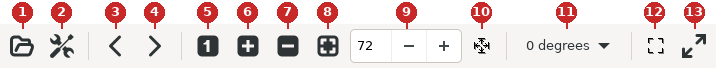

This section describes the buttons of the toolbars. The numbers in the toolbar pictures match the numbers of the items. For buttons that have the same function in the menu bar, see also the menu items (section 3).
The item names follow the tooltips shown when the pointer is on a button.

The toolbar of the thumbnail window (default settings; the numbers match the items below)
The same as [File | Open...].
The same as [Edit | Options...].
Makes the previous tab (one to the left) active. The same as [Tab | Previous Page].
Makes the next tab (one to the right) active. The same as [Tab | Next Page].
The same as [Edit | Reload Cache].
While "Load Thumbnails Recursively" of the directory view mouse menu runs, skips loading the thumbnails of the current directory.
A skipped tab (directory) shows only the file names. It cannot be used while no thumbnails are being created.
Stops "Load Thumbnails Recursively" of the directory view mouse menu completely. It cannot be used while no thumbnails are being created.
Changes the thumbnail size.
Enter a value here and press Enter, then use "Reload Cache" or "Update All Thumbnails"; the thumbnails are then made in the new size.
To apply it with a shortcut key instead of the menu, press ESC to move the focus out of the size field first; otherwise the key is typed into the field.
The change applies only to the tab that was active.
For how the cache is reloaded, see "The difference between Refresh List, Reload Cache and Update All Thumbnails" in the Tips.
Shows the path of the active tab.
When a directory that has no tab yet is entered here, a new tab is opened only if the directory contains images. Tab completion can be used here.
Changes the display mode of the active tab. The setting applies only to the active tab. These six can be chosen. The pictures below show the thumbnail view of an enlarged window.
Album: the thumbnails are arranged in rows with the file name below each one.

Album
Album2: small thumbnails with the file names, arranged from top to bottom.

Album2
Album3: the file name, size and modification time beside each thumbnail, arranged from top to bottom and continued in the next column.

Album3
Detail: a table of the file name, image size, size, type and so on. The columns are chosen in [Preferences | Thumbnail Window | Thumbnail View | Detail View] (section 6.3.2.3).

Detail
Detail + Icon: "Detail" with a small thumbnail at the start of each row.

Detail + Icon
Detail + Thumbnail: "Detail" with a thumbnail at the start of each row.

Detail + Thumbnail

The toolbar of the directory view (the numbers match the items below)
Moves the cursor of the directory view to the home directory of the user and closes all trees. The thumbnail view is not affected.
Moves the top directory one level up.
This is useful after Go Here of the mouse menu.
Refreshes the directory view.
Used mainly to show directories created or deleted from the command line.
Shows or hides the dot directories in the directory view.

The toolbar of the image window (default settings; the numbers match the items below)
Zooming (enlarging and reducing) and fitting the image window and image view are affected by Auto resize to image size in [Preferences | Image Window]: depending on it, the image window is resized automatically or not.
When Keep aspect ratio is set, the aspect ratio of the image view is kept when it is enlarged or reduced.
The same as [File | Open...].
The same as [Edit | Options...].
The same as [Go | Previous].
The same as [Go | Next].
Shows the image view in the original size of the image (100%).
Increases the scale of the image view by 5%.
Decreases the scale of the image view by 5%.
Enlarges or reduces the image view to the size of the image window.
Sets the scale (%) of the image view.
When the aspect ratio is kept, only the X scale is shown. Otherwise the Y scale is shown to its right, and the X and Y scales can be set separately.
Zooms (enlarges or reduces) the image view to the values entered in the scale fields.
Chooses the orientation of the image: 0, 90 degrees clockwise, 180 or 90 degrees counterclockwise.
Resizes the image window to the size of the image view. The same as [View | Fit to Image].
Shows the image fullscreen.
Pressing the button again returns to the window.